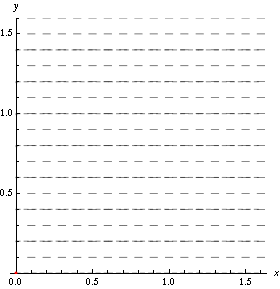
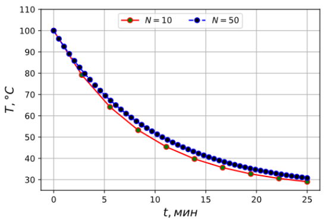

Лабораторная работа №2: “Методы численного расчёта течений в ударной трубе”#
В данной лабораторной работе рассматривается решение задачи об ударной трубе. Имеется бесконечной длины труба, в некотором месте которой расположена непроницаемая перегородка. В левой части трубы газ находится в одном состоянии, в правой — в другом. Либо в двух частях трубы находятся два разных газа, что сути не меняет. В некоторый (начальный) момент времени перегородка мгновенно исчезает. Что при этом произойдёт? Что за процесс начнётся и как он будет развиваться? В данной работе вам предстоит разобраться с этими вопросами.
Однако начнём несколько издалека (оно того стоит)…
Уравнения газовой динамики#
Из начала курса газовой динамики вы знаете, что в ней широко применяется модель сплошной среды. Когда вы выводите те или иные газодинамические уравнения, то считаете, что жидкость или газ полностью заполняет пространство. В нём нет разрывов. При выводе уравнений вы также рассматриваете малые объёмы жидкости (газа), иными словами жидкие частицы. Именно их малость позволяет в математическом пределе получать искомые дифференциальные уравнения, описывающие динамику жидкости (газа).
Вам уже наверняка известно такое уравнение:
Быть может, оно известно вам не совсем в такой форме. Здесь учитывается сила вязкого трения \(\nu \nabla \cdot \nabla \vec u\) и сила тяжести \(\vec g\). Если указанные силы не учитывать, то получим уравнение Эйлера (для идеальной жидкости), описывающее закон сохранения импульса:
Примем следующие обозначения: \(\vec u\) — поле скорости жидкости: \(\vec u = (u, v, w)\); \(p\) — давление жидкости; \(\nabla\) — дифференциальный оператор:
\(\vec i\), \(\vec j\), \(\vec k\) — орты осей декартовой системы координат.
Если мы дополним уравнение (1) или (2) уравнением неразрывности для несжимаемой жидкости
то сможем решать довольно интересные задачи.
В динамике жидкости существует два подхода к решению системы уравнений (1) (или (2)) и (3) — подход Лагранжа и Эйлера.
Подходы Лагранжа и Эйлера#
Лагранжевый подход, названный в честь французского математика Лагранжа, вероятно, наиболее интуитивно понятен, поскольку его уравнения выводятся непосредственно из второго закона Ньютона. В нём модель сплошной среды рассматривается как система частиц. Каждая точка в жидкости обозначается как отдельная частица, имеющая в каждый момент времени \(t\) положение \(\vec x(t)\) и скорость \(\vec u(t)\). Проще говоря, в постановке Лагранжа мы как бы “привязываем” себя к рассматриваемой частице жидкости и “путешествуем” вместе с ней.
Подход Эйлера, названный в честь швейцарского математика Эйлера, заключается в рассмотрении не частиц жидкости, а параметров течения жидкости через рассматриваемые точки пространства. Мы смотрим на фиксированные точки в пространстве и следим, как изменяются во времени такие параметры жидкости, как плотность, скорость, температура и т.д. в этих точках. Проще говоря, мы становимся как бы сторонним наблюдателем. При этом через какую-либо точку проходит несметное количество различных жидких частиц.
В постановке Лагранжа мы как бы находимся на воздушном шаре, плывущем вместе с ветром, и измеряем давление, температуру, влажность воздуха, который течёт рядом с нами и несёт нас. В эйлеровой постановке мы стоим на земле и измеряем давление, температуру, влажность воздуха, который проносится мимо.
С точки зрения численных расчётов подход Лагранжа соответствует системе частиц, с сеткой, соединяющей частицы (и, следовательно, также динамично изменяющейся), или без неё, а точка зрения Эйлера — использованию фиксированной пространственной сетки, которая не меняется в пространстве.
Может показаться, что подход Эйлера неоправданно сложен: почему бы просто не использовать лагранжевы системы частиц? Действительно, существуют схемы, такие как метод вихрей и гидродинамика сглаженных частиц, в которых так и поступают. Однако даже они опираются на уравнения в Эйлеровой постановке для расчёта сил в жидкости.
Преимущества постановки Эйлера:
Аналитически работать с пространственными производными, такими как градиент давления и вязкость, проще в эйлеровом представлении.
Гораздо проще численно аппроксимировать эти пространственные производные на фиксированной эйлеровой сетке, чем на облаке произвольно движущихся частиц.
Ключом к соединению этих двух точек зрения является субстанциональная производная. Начнём с лагранжевого описания: есть частицы с положениями \(\vec x\) и скоростями \(\vec u\). Рассмотрим общую величину, которую назовем \(s\): каждая частица имеет свое значение \(s(t)\). (Величина \(s\) может быть плотностью, скоростью, температурой или каким-либо другим параметром течения). В частности, функция \(s(t, \vec x)\) говорит нам о значении \(s\) в момент времени \(t\) для частицы, находящейся в точке \(\vec x\). Можно сказать, что \(s\) — это эйлерова переменная, поскольку она является функцией не только времени, но и пространства. Если задаться таким вопросом: “Как быстро меняется \(s\) для частицы, чьё положение задается функцией времени \(\vec x(t)\)?” — то мы перейдём к постановке Лагранжа, ведь теперь \(s(t, \vec x(t))\) по сути является функцией времени, а следовательно, зависит от выбранной частицы, а не от пространства. Итак, возьмём полную производную (помня правила дифференцирования сложной функции):
Продифференцировав сложную функцию в постановке Эйлера, получили субстанциональную производную, то есть перешли к постановке Лагранжа.
Для полноты картины распишем субстанциональную производную для трёхмерного течения:
Давайте рассмотрим две компоненты, которые входят в субстанциональную производную. Первый — \(\partial s / \partial t\) — это скорость изменения \(s\) в данной фиксированной точке пространства. Второй член — \(\nabla s \cdot \vec u\) — оценивает то, насколько сильно это изменение обусловлено различиями параметров течения в окрестности этой точки жидкости.
Обратите внимание, что мы всё это время говорили о том, как количество чего-либо (молекулы, частицы) перемещается вместе с полем скоростей \(\vec u\). Это называется адвекцией (или иногда конвекцией или переносом). Уравнение адвекции — это уравнение, в котором используется субстанциональная производная. В простейшем случае она равна нулю
или, что то же самое,
Это означает, что величина \(s\) движется с потоком, но не изменяется в лагранжевой постановке.
С кинематической точки зрения следует различать траектории частиц и линии тока. При стационарном движении нет нужды различать эти понятия. Однако в нестационарном случае между ними есть существенная разница. Под траекторией понимают пространственный путь, который описывает фиксированная частица жидкости в процессе движения. Линия тока — это линия, вдоль которой в каждый отдельный момент времени направлен вектор скорости, то есть это годограф.
В общем случае линия тока отнюдь не связана с какой-либо конкретной частицей в силу того, что картина течения изменяется во времени. Но при стационарном течении, когда в каждый момент времени распределение скоростей одинаково, линии тока и траектории частиц полностью совпадают. Найдем уравнение, которому удовлетворяют линии тока. Так как линия тока всюду параллельна вектору скорости, координаты вектора \((\mathrm{d} x, \mathrm{d} y, \mathrm{d} z)\) пропорциональны соответствующим проекциям скорости, то есть
Отметим, что в уравнения, определяющие линии тока, время \(t\) входит в качестве параметра. В уравнения траекторий время входит в качестве переменной:
Графически разница между линиями тока и траекторией частицы в случае нестационарного течения показана на гиф-анимации ниже.

Пунктирные линии соответствуют линиям тока с началом в фиксированных точках. Короткие засечки показывают направления касательных к линиям тока в фиксированных точках пространства. Красная кривая — траектория частицы, движущейся из начала координат. Синяя кривая — линия тока, которой принадлежит частица в каждый конкретный момент времени.
Условие несжимаемости#
Настоящие жидкости и тем более газы сжимаемы. Собственно, именно сжимаемость среды обеспечивает существование звуковых волн: возмущения объёма, а значит, плотности и давления жидкости.
Note
Если вдруг вас когда-то учили, что различие между жидкостями и газами заключается в том, что газы способны менять свой объём, а жидкости — нет, то знайте — это не так: иначе вы не смогли бы слышать под водой.
Однако обычно жидкости не очень сильно меняют свой объем. Даже с помощью невероятно мощного насоса практически невозможно сильно изменить объём воды. Даже воздух не сильно изменит свой объем, если только вы не поместите его в насос или не будете иметь дело с действительно экстремальными явлениями, такими как ударные волны. При моделировании жидкостей и газов стараются по возможности пользоваться моделью несжимаемой среды: это экономит время и приводит ко вполне качественным результатам. Модель сжимаемой жидкости (газа) широко используется разве что в задачах акустики. Однако модель несжимаемого газа не годится для задач со сверхзвуковыми течениями. В данной работе будем рассматривать как несжимаемый (в первой части), так и сжимаемый (во второй части) газ.
Выберем в некоторый момент времени произвольный участок жидкости. Назовём этот объём \(\Omega\) и его граничную поверхность \(\partial \Omega\). Можно измерить, как быстро меняется объём этой частицы, проинтегрировав нормальную составляющую скорости потока (по внешней к объёму нормали \(\vec n\)) по границе объёма:
где \(\mathrm{d} f\) — элементарная площадка граничной поверхности \(\partial \Omega\).
Для несжимаемой жидкости объём должен оставаться постоянным, то есть скорость его изменения должна быть равна нулю:
Теперь мы можем использовать теорему Остроградского-Гаусса, чтобы преобразовать поверхностный интеграл в объёмный. В данном случае получаем
Теперь приятное: это уравнение должно быть справедливо для любого выбора \(\Omega\), для любой области жидкости. Единственная непрерывная функция, которая интегрируется в ноль независимо от области интегрирования, — это сам ноль. Таким образом, подынтегральная функция должна быть нулевой везде:
Это и есть условие несжимаемости.
Векторное поле, удовлетворяющее условию несжимаемости, называется бездивергентным (\(\nabla \cdot \vec u\) называется дивергенцией). Одна из сложных частей моделирования несжимаемых жидкостей — убедиться, что поле скоростей остаётся бездивергентным. Здесь на помощь приходит давление.
Можно сказать, что давление — это сила, необходимая для сохранения поля скоростей бездивергентным. Если вы вспомните курс теоретической механики, то можете представить условие несжимаемости как ограничение, а поле давления — как множитель Лагранжа, необходимый для удовлетворения этого ограничения в соответствии с принципом нулевой виртуальной работы. Если не помните, не переживайте. Давайте выведем выражение для давления.
Давление фигурирует только в уравнении импульса, а мы хотим как-то связать его с дивергенцией скорости. Поэтому возьмём дивергенцию обеих сторон уравнения импульса (1):
Оператор \(\nabla\) можно внести под знак дифференциала:
Если поток несжимаемый, то выполняется условие (4). Следовательно:
Это не совсем относится к численному моделированию, которым мы будем заниматься, но это стоит увидеть, потому что при дискретизации мы пройдем почти те же шаги, начиная с изучения скорости изменения объема и заканчивая уравнением для давления.
Численное интегрирование обыкновенного дифференциального уравнения: явный метод Эйлера#
Рассмотрим обыкновенное дифференциальное уравнение (ОДУ) вида
Ничего экстраординарного. Пусть требуется проинтегрировать его по времени \(t\) в пределах от \(t_0\) до \(t_\mathrm{к}\). При этом для физической величины \(s\) в начальный момент времени \(t_0\) нам известно начальное условие (или её распределение): \(s(t_0) = s^0\) (почему индекс проставлен сверху, будет сказано далее). Правая часть \(f(s, t)\) — это некоторая известная функция, зависящая в общем случае как от времени, так и от искомой величины \(s\).
Найдём приближённое решение в момент \(t_1 = t_0 + \Delta t\) (вспоминаем разложение функций в ряд), отбросив члены второго и большего порядка малости:
Заменяя \(\dot s\) на \(f(s, t)\), получим
Выполняя этот процесс итерационно, найдём общее соотношение:
Полученное уравнение можно записать в несколько более ёмком виде:
Верхний индекс отвечает за номер шага по времени.
Note
Нижние индексы мы будем использовать для номеров шагов по пространству (координатам). То, что в обозначении времени \(t_n\) индекс стоит внизу, никак с принятыми обозначениями не связано: время никак не связано с координатами, поэтому двойной индексации наподобие \(t^n_i\) у него быть не может.
Здесь \(s^{n+1}\) явно зависит от \(s^n\), следовательно, и метод легко назвать явным. Данный метод легко реализовать в коде.
Пример: остывание чашки кофе#
Скорость изменения температуры кофе в чашке определяется таким ОДУ:
где \(T_\mathrm{окр}\) — температура окружающей среды; \(r\) — коэффициент “остывания” (теплоотдачи).
Начальную температуру кофе обозначим как \(T^0 = T(t=0)\).
Численное решение этого уравнение явным методом Эйлера выглядит следующим образом:
Проинтегрировав (5) по схеме (6), получим решение \(T(t)\), графически изображённое на рисунке ниже.

Стоит отметить, что точность решения зависит от числа разбиений отрезка интегрирования \(N\) (в данном случае отрезка времени \(t\)). В пределе при \(N \rightarrow \infty\) или (что то же самое) при \(\Delta t \rightarrow 0\) численное решение совпадает с точным.
Уравнение переноса: физический и математический смысл#
Уравнение переноса для некоторой физической величины \(s(t, \vec x)\), зависящей от времени \(t\) и координаты \(\vec x = (x, y, z)\) имеет следующий вид:
Такое уравнение может описывать, например, концентрацию пыли в потоке воздуха.
Поскольку величина \(s\) зависит как от времени, так и от пространства, то производная в (7) является субстанциональной. То есть уравнение на данный момент записано в постановке Лагранжа. Раскрыв её, получим:
Дифференциальный оператор \(\nabla\) должен быть вам знаком. Будучи применённым к скалярной функции \(s\), он означает вычисление её градиента.
где \(\vec i\), \(\vec j\), \(\vec k\) — орты системы отсчёта.
Скалярное произведение поля скорости \(\vec u = (u, v, w)\) и градиента \(s\) даёт следующее:
Тогда в частном одномерном случае при потоке, например, вдоль оси \(x\) имеем:
Это уравнение переноса некоторой величины \(s\) вдоль оси \(x\) со скоростью \(u\), записанное в постановке Эйлера.
Никого не удивишь тем, что для решения этого уравнения требуется задать начальное условие для \(s\). Пусть начальное условие будет следующим: \(s(t=0) = s^0 = q(x)\). Здесь начальное распределение \(q(x)\) может описываться, к примеру, ступенчатой функцией:
Граничных условий нет — пусть прямая \(x\) будет бесконечна. Пыль будет лететь в бесконечность вместе с потоком воздуха.
Одномерное уравнение переноса (8) имеет известное точное решение:
Это просто параллельный перенос начального распределения \(q(x)\) вдоль оси \(x\) со скоростью \(u\). Проще говоря, представьте, что наша “ступенька” (9) с течением времени просто перемещается по оси \(x\) со скоростью \(u\). Только и всего.
Дискретизация уравнения переноса#
Введём равномерную разностную сетку по координате \(x_0, x_1, \ldots, x_N\), причём
Количество узлов сетки \(N = (x_N - x_0) / \Delta x\).
Искомая сеточная функция определена в каждой точке дискретной разностной сетки: \(s_k = s(x_k)\) (зависимость от времени здесь опущена, но подразумевается). Нижний индекс отвечает за номер шага по координате (пространству).
Теперь полноценное обозначение выглядит так: \(s_k^n\) — \(n\)-ый шаг по времени и \(k\)-ый шаг по координате.
Аппроксимация производных конечными разностями#
Для простоты рассмотрим зависимость функции \(s\) только от координаты. Все последующие рассуждения будут верны и для зависимости от времени.
Разложим функцию \(s(x)\) в ряд Тейлора:
С математической точки зрения при \(\Delta x \rightarrow 0\) эти два разложения одинаковы. Но с точки зрения конечно-разностной схемы аппроксимации производных — нет.
Из первой формулы можно получить так называемую разность вперёд:
Из второй формулы – разность назад:
Вычитая эти формулы, получим центральную разность:
Как было сказано выше, конечно-разностные схемы совсем не то же самое, что математическая производная. Посмотрим, как это выражается на примере уравнения переноса.
Разностные схемы уравнения переноса#
Без деталей рассмотрим некоторые конечно-разностные схемы для уравнения переноса.
Разность вперёд и по времени и по координате:
Warning
Эта схема оказывается всегда неустойчивой.
Разность “вперёд” по времени и “назад” по координате:
Данная схема может быть устойчивой при соблюдении условия Куранта-Фридрихса-Леви (о нём ниже).
Неявная схема:
Неявная схема сложнее в реализации, но она безусловно устойчива.
Об устойчивости конечно-разностных схем#
Основной вопрос, связанный с любым численным методом, заключается в том, стабилен ли он: не накапливаются ли ошибки лавинообразно? Если метод безусловно устойчив, то это значит следующее: независимо от того, насколько велик шаг \(\Delta t\), решение не “взрывается”. Безусловно устойчивые схемы очень привлекательны. Мы можем выбрать временной шаг исключительно на основе компромисса между точностью и скоростью вычислений.
На практике можно получать странные результаты, если выбрать слишком большой шаг \(\Delta t\). Существуют различные эмпирические правила. Например, можно ограничить \(\Delta t\) так, чтобы переносимая частица (пыли, жидкости и т.п.) преодолевала за это время не более заданного числа ячеек сетки (пяти, к примеру):
где \(u_\mathrm{max}\) — максимальная скорость среди всех узлов сетки.
При таком временном шаге в некоторых случаях артефакты численного расчёта всё равно будут присутствовать. Можно снизить вероятность возникновения заметных ошибок, например, рассмотрением не 5 ячеек, а всего одной, то есть
Условие Куранта-Фридрихса-Леви (CFL)#
Прежде чем оставить тему размеров временных шагов, более подробно рассмотрим то, что называется условием Куранта-Фридрихса-Леви (CFL). В литературе существует некоторая путаница относительно того, что именно оно собой представляет.
Условие CFL, названное в честь математиков-прикладников Р. Куранта, К. Фридрихса и Х. Леви, представляет собой простое и интуитивно понятное необходимое условие сходимости. Сходимость означает, что если вы повторяете расчёт (моделирование) со все меньшими и меньшими шагами \(\Delta t\) и \(\Delta x\), в пределе, стремящимися к нулю, то численное решение должно приближаться к точному решению.
Решение \(s(t^*, \vec x^*)\) зависящего от времени уравнения в частных производных, такого как уравнение переноса, в конкретной точке пространства \(\vec x^*\) и времени \(t^*\) зависит от части или всех начальных условий. То есть, если мы изменим начальные условия в некоторых местах и снова решим задачу, она изменится. В других местах изменения могут не иметь эффекта. В случае уравнения адвекции (переноса) с постоянной скоростью \(u\) значение \(s(t^*, \vec x^*)\) в точности равно \(s(0, \vec x^* - u t^*)\), поэтому оно зависит только от одной точки в начальных условиях (от вектора \(\vec x\)). Для других уравнений в частных производных, таких как уравнение теплодиффузии \(\partial s / \partial t = \nabla \cdot \nabla s\), каждая точка решения зависит от всех точек начальных условий. Область зависимости точки (расчётной сетки) — это именно набор точек, которые влияют на значение решения в этой точке.
Каждая точка численного решения также имеет область зависимости: опять же, набор мест в начальных условиях, которые влияют на значение решения в рассматриваемой точке. Вполне очевидно, что область зависимости при численном расчёте, по крайней мере в пределе, должна содержать истинную (математическую) область зависимости, чтобы численное решение вообще могло стремиться к точному решению. Это, по сути, и есть условие CFL: сходимость в общем случае возможна только в том случае, если в пределе \(\Delta x \rightarrow 0\) и \(\Delta t \rightarrow 0\) численная область зависимости для каждой точки содержит истинную область зависимости.
При расчёте потенциального течения, например, условие CFL выполняется, если в пределе траектории жидких частиц достаточно близки к истинным траекториям — достаточно близко, чтобы они не выходили за границы ячеек, через которые проходит реальные траектории. Тогда, если мы не сделаем что-то сильно неправильное, в пределе траектории частиц должны сходиться к истинным.
Тем не менее, для стандартных явных методов конечных разностей для уравнения переноса, где новое значение точки сетки \(s_k^{n+1}\) вычисляется на основе одного или нескольких предыдущих значений в соседних точках сетки, то есть из точек, удаленных только на \(C \Delta x\) при небольшой целочисленной константе \(C\), существует гораздо более очевидное выражение CFL. В частности, точное решение движется со скоростью \(\vec u\), поэтому скорость передачи информации при численном расчёте, то есть \(C \Delta x / \Delta t\), должна быть как минимум такой же по величине. То есть для сходимости таких численных схем требуется соблюдение условия (в одномерном случае)
Отсюда
Вот тут-то и возникает больше всего путаницы. Часто с точностью до небольшого постоянного множителя (13) то же самое, что и максимальный устойчивый шаг по времени для численного метода и, в частности, в оригинальной статье Куранта так и было. Таким образом, иногда условие CFL путают с условием устойчивости конечно-разностной схемы. Но на деле существуют методы, которые нестабильны независимо от размера временного шага, такие как прямой метод Эйлера и схема центральных разностей. Существуют также явные методы, которые стабильны для произвольных размеров временного шага, однако при этом могут привести к неправильному ответу, если не будет выполнено условие CFL.
Чтобы ещё больше запутать всех, кого только можно, существует связанная с условием CFL величина, называемая числом CFL, часто обозначаемая как \(\alpha\). Под \(|u|\) подразумевается некоторая характерная скорость потока. Как правило, в качестве \(|u|\) выбирается какое-то характерное значение. К примеру, при расчёте волнового процесса выбирают скорость звука как максимальную скорость распространения возмущений (информации) в среде. Тогда число CFL \(\alpha\) определяется так:
Таким образом, временной шаг, о котором говорилось выше (неравенство (12)), можно выразить как задание числа CFL, равного пяти. Число же CFL само по себе является просто полезным параметром, а не условием чего-либо.
В лабораторной работе используйте \(\alpha < 1\).
Численная диффузия#
Конечно-разностные схемы лишь аппроксимируют производные. А где аппроксимация, там и численные ошибки. Посмотрим, к какой ошибке приводит явная схема Эйлера. Для этого рассмотрим одномерное уравнение переноса
Допустим, что за шаг по времени \(\Delta t\) каждая \(i\)-ая жидкая частица проходит расстояние, не превышающее размер ячейки \(\Delta x\), то есть \(\Delta t < \Delta x / u\) и частица находится на отрезке \([x_{i-1}; x_i]\). Тогда мы можем аппроксимировать \(s_i^{n+1}\) следующим образом:
где \(\alpha = \Delta t u / \Delta x\) — число CFL.
Перепишем полученное выражение в таком виде:
Это та же самая явная схема Эйлера, что мы получили ранее (схема вперёд по времени и назад по координате).
Но теперь применим приём обратного анализа ошибок и разложим \(s_{i-1}^n\) в ряд Тейлора в окрестности \(\Delta x\) относительно \(s_i^n\):
Подставим это разложение в (16):
В итоге получаем следующую конечно-разностную схему:
Присмотритесь и вы увидите, что эта схема описывает такое дифференциальное уравнение:
Но это не совсем то уравнение, с которого мы начали. Мы обнаружили, что явный метод Эйлера приводит к численной диффузии, выражающейся в появлении численной (искусственной) вязкости (в правой части уравнения). Очевидно, что чем меньше \(\Delta x\), тем меньше и вклад численной вязкости в итоговый результат, но до конца избавиться от неё простым уменьшением шага невозможно. Вместо этого используют более сложные схемы аппроксимации (метод Рунге и другие полиномиальные методы третьего и четвёртого порядка точности), то есть усложняется выражение (15). Об этом читайте дополнительную литературу. Здесь мы лишь показали, к какому серьёзному явлению приводят конечно-разностные аппроксимации производных, а именно, к решению другого дифференциального уравнения. Стоит отметить, что подобный анализ гораздо сложнее в двумерном и трёхмерном случаях.
Лабораторная работа#
Часть 1#
Оттачиваем навыки Python и численного решения дифференциальных уравнений в частных производных, а именно, уравнения переноса.
Само уравнение выглядит так:
где \(s\) — некоторая физическая величина: концентрация вещества, плотность и т.д.; \(u\) — скорость переноса этой величины в данном случае в направлении оси \(x\).
Запишем это уравнение в виде разностной схемы Эйлера:
или
При решении задачи Коши для уравнения (17) необходимо задать сетку \(X\) в пределах от \(x_\mathrm{нач}\) до \(x_\mathrm{к}\) с \(N\) узлами и начальное распределение функции \(s\) по этой сетке, то есть функцию:
Требуется написать программу решения уравнения (17), используя схему (18) и обеспечивая её устойчивость.
Часть 2 — задача Сода#
Имеется бесконечной длины труба с непроницаемой перегородкой (мембраной) с координатой \(x_а = 1/2\). Слева от перегородки находится идеальный газ с параметрами \(p_\mathrm{л}\), \(\rho_\mathrm{л}\) и \(u_\mathrm{л}\), справа — газ с параметрами \(p_\mathrm{п}\), \(\rho_\mathrm{п}\) и \(u_\mathrm{п}\). В момент времени \(t=0\) мембрана мгновенно исчезает.
Требуется определить параметры смеси газов на участке трубы \(x \in [0; 1]\) в заданный момент времени \(t_\mathrm{к}\). Иными словами в момент времени \(t_\mathrm{к}\) найти распределение по длине трубы давления смеси \(p(x)\), плотности \(\rho(x)\), полной энергии \(E(x)\), а также скорости \(u(x)\).
Теория#
Математически процессы, происходящие в рассматриваемой ударной трубе, описываются системой дифференциальных уравнений в частных производных — нестационарными уравнениями ГД — вида:
Систему (19) можно переписать в векторном виде:
где \(\vec q\) — вектор канонических переменных:
\(\vec f\) — вектор потоков:
\(E\) — полная энергия газа; \(\varepsilon\) — внутренняя энергия газа; \(H\) — энтальпия газа, \(H = E + p/\rho\); \(p\) — статическое давление газа; \(\rho\) — плотность газа; \(u\) — скорость газа.
Полученное уравнение может быть решено численно методом Годунова:
где поток на левой границе ячейки \(k+1/2\) рассчитывается по методу Русанова:
где \(c_\mathrm{max}\) — максимальная скорость звука на расчётной сетке.
В (20) и (21) дробные индексы соответствуют центрам расчётных ячеек, целочисленные индексы — границам этих ячеек. Так, левая и правая граница ячейки с индексом \(k+1/2\) имеют индексы \(k\) и \(k+1\) соответственно.
Important
Если вы задали число ячеек расчётной сетки \(N\), то число граничных точек будет \(N + 1\). Это важно помнить при формировании массивов значений величин с дробными и целыми индексами.
Таким образом, требуется решить систему уравнений (19) методом Годунова (20), рассчитывая потоки на границах ячеек по формуле (21).